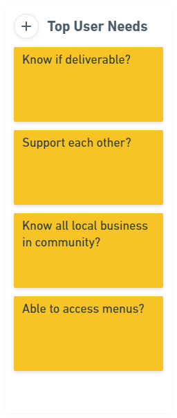
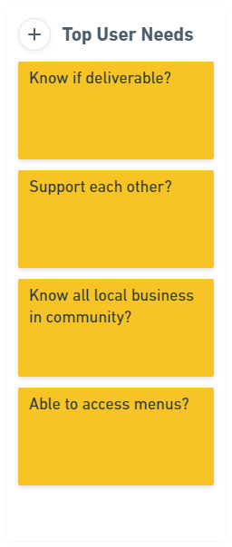
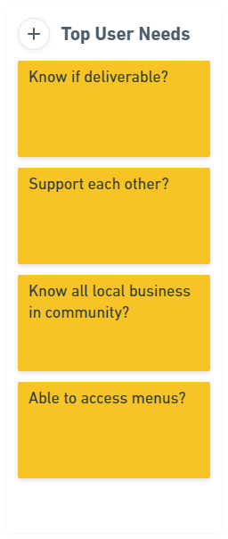
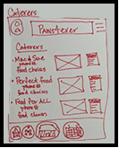
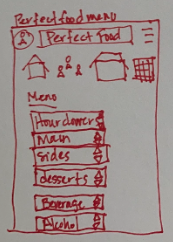
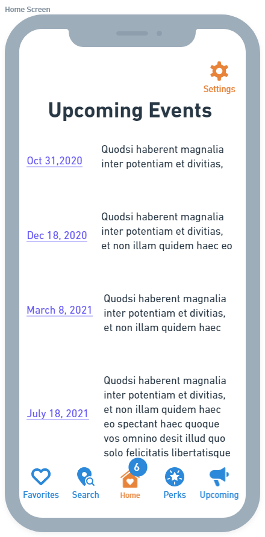
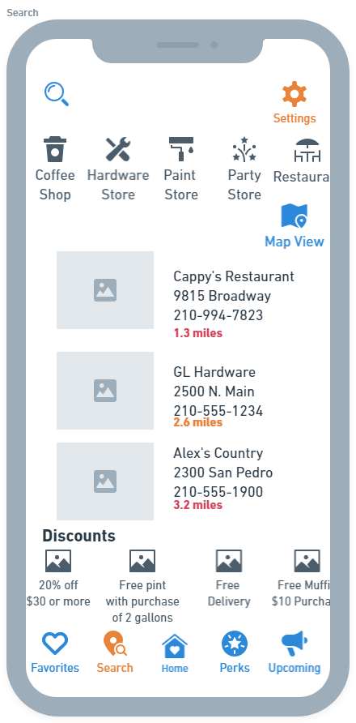

Typical day in non-profit organization. Lots of phone calls, not enought time. Planning for events can take months for everything to line up.
Project Manager, Researcher, Designer
This was a solo project, which I was given. The App is for Non-Profit companies to utilize the local community for events. My first instinct was to have local restaurants cater to meetings and small functions. Knowing that companies like Uber Eats and Grubhub possible could do this, but usually they don't cater to local business.While doing research I realized that the non-profits wanted something to help make their day to day easier.Not having to look up different vendors every time. In the end it is an app where non-profits can utilize all local business to help with organization, buying products, and having meals for the committee.
Adopting processes like Color Theory, Typography, Alignment, and UI. My thought process included looking at other apps with similar functions. Google Map, Nextdoor, and Yelp where the ones I focused on to create Infin8 App.
Interview 4 people whom worked with Non-profit companies.

Typical day in non-profit organization. Lots of phone calls, not enought time. Planning for events can take months for everything to line up.
The creative process was done with Whimsical and Invision. This was the first project and as the weeks went by we learned different aspects of defining a website.
When I first started the thought process it was so much bigger than it needed to be. I was trying not to just come up with a simple map locator but wanted to take what the research stated. There are so many app today that have calendars and location finders, I wanted to give the non-profits the ability to find local restaurants and vendors within a certain amount of miles. Staff need to be able to get menus and have delivery available. The plan was to incorporate google maps and reach out to local restaurants for the menus. Most ma and pop restaurants are located on google but they don't have websites. This was to be able to provide for both the community and non-profit. I wanted to take away from going to chain places and give the community what it needed.
   Test was hit and miss. We need to get someone close to us in order to test the product. The suggestions were family and friends. I didn't really have either where I live so I tried to share it with other and get feedback.
Primarily the response was that it flowed well, but was lacking. I understood because InVision is a tough prototyping due to the fact it is low-res. You have to place the frames correctly. I didn't fill the frames out because I didn't know what to expect with prototyping. First attempt and I would rather use Figma or XD to prototype with hi-res. It makes it feel more real.